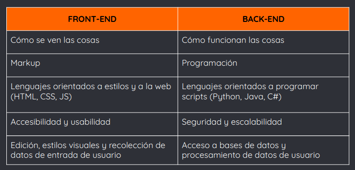
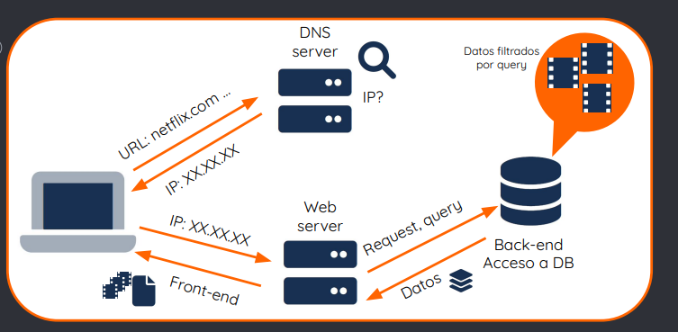
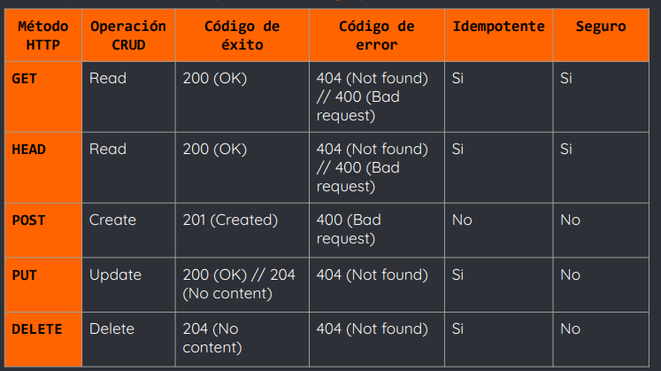

Resumen
1. Front-end y back-end: definiciones
Términos relacionados a la separación de intereses en dos capas bien definidas:
→ capa de presentación, front-end
→ capa de acceso a datos, back-end
- Ambas capas funcionan por separado e interactúan entre sí para asegurar el correcto funcionamiento de un sitio web
- La principal ventaja de esta separación es la escalabilidad y la fácil adaptación del sitio
- El front-end es la parte del desarrollo web que se encarga de la parte frontal del sitio
- Es la capa o parte del software que interactúa con el usuario
- El código se ejecuta en el navegador del usuario (cliente)
-En esta capa se manejan los componentes visuales, la estructura, interactividad y el diseño del sitio web
- Además, en lo funcional se encarga de tomar los datos de entrada del usuario y ajustarlos a las especificaciones requeridas por el back-end
- En la capa front-end se trabaja con lenguajes del lado del cliente, como:
→ HTML, para estructurar el contenido del sitio
→ CSS, para darle estructura y estilo al sitio
→ Javascript, para darle dinamismo al sitio y funcionalidad lógica
- El back-end es la parte del desarrollo web de acceso a datos de un software
- Es una capa que no es accesible directamente por el usuario
- Procesa los datos de entrada del usuario, enviados por el front-end
- Es la lógica que hace que una página web funcione como se espera y que la información se transmita de manera segura

- Cuando escribimos en la barra de nuestro navegador una URL, estamos solicitando que se nos muestre un sitio web, el cual vemos gracias al front
- Luego la computadora verifica qué servidor está corriendo el sitio, y el servidor evalúa qué tipo de petición se está haciendo. Acá entra el back, realizando consultas a bases y acceso a datos
- Por último se muestra la interfaz del sitio, esto es cuando el front recibe los datos del back y los presenta al usuario
1) Ejemplo: búsqueda de “Peaky Blinders” en Netflix
2) La URL está compuesta de las siguientes partes:
https:
- Protocolo: conjunto de reglas que determinan cómo se manejan y se transfieren archivos a través de la web.
Por ejemplo, https indica la transferencia segura de datos de hipertexto (HTML)
www.
- Subdominio: indica el tipo de recurso o dato que el browser debe enviar.
El más común es www, que es un símbolo general para cualquier recurso de internet.
netflix
- Dominio: es el nombre del sitio, por ejemplo, netflix.
Debe ser único, ya que determinan la dirección de un sitio web
com
- Dominio de nivel superior (TLD): también conocido como extensión, indica qué tipo de contenido tiene el sitio web.
Por ejemplo, com indicaba, originalmente, que se trataba de un sitio comercial (hoy en día se utiliza para cualquier tipo de sitio). Otro ejemplo es org, el cual indica que es un sitio de una organización.
path /search
- Path: indica en qué directorio están los recursos que se solicitan.
Hoy en día, es más común que se utilice el path para identificar la ruta en la estructura de navegación del sitio.
Por ejemplo, search indica que es la parte de la página en la cual hacemos las búsquedas
query ?
- Query: indica que se está haciendo una query o consulta a una base de datos. Por ejemplo, en este caso estaríamos haciendo una query a la base de datos que contiene los títulos disponibles en Netflix
q=peaky%20blinders
- Parámetros: son los valores como tal que le pasaremos a la query cuando hagamos la búsqueda. En este caso, le estamos pidiendo que busque en la base de datos que contiene los títulos disponibles en Netflix, aquellos que coincidan con peaky blinders
3) Se hace la traducción de URL a dirección IP mediante el sistema de nomenclatura DNS y se obtiene la página solicitada.
Aquí ocurren las comunicaciones con el back:
En este caso, se hará una consulta a la base de datos, solicitando aquellos resultados relacionados al término ingresado (“peaky blinders”)
4) Se envían dichos resultados al front. El front procesa los datos recibidos del back y los deja preparados para presentarlos al usuario en el navegador
Podemos ver todo este flujo MUY resumidamente en el siguiente diagrama

2. Requests, responses y protocolo HTTP
Una request o petición es un mensaje que envía el cliente para solicitar información a un servidor, el cual responde con otro mensaje, llamado response
- Los clientes se comunican con servidores web a través del protocolo HTTP
- Un protocolo es un sistema de reglas que permiten que dos o más entidades se comuniquen entre ellas para transmitir información
- HTTP (HyperText Transfer Protocol) es un protocolo que nos permite realizar peticiones de datos y recursos, es la base de cualquier intercambio de datos en la web
- Este protocolo regula cómo el cliente debe formular las peticiones, y cómo debe responder el servidor a ella
- HTTP es un protocolo de estructura cliente-servidor
- Es decir, una request de datos es iniciada por un cliente (normalmente un navegador web), el cual recibirá los datos
- Luego una página web resulta de la unión de distintos sub-documentos recibidos mediante responses a requests, como pueden ser archivos multimedia, CSS, scripts, etc
- HTTP define un conjunto de métodos de petición para indicar la acción que se desea realizar sobre unrecurso
- Veremos los principales métodos: GET, HEAD, PUT,POST y DELETE
- Estos métodos serán particularmente útiles a la hora de crear una API REST (lo estudiaremos más adelante
- Antes de ver cada método en particular, debemos hablar sobre dos de sus propiedades importantes y las respuestas que pueden devolver dichos métodos
- Los métodos HTTP pueden clasificarse según dos propiedades: idempotencia y seguridad
- Además, los métodos devolverán códigos de estado, status codes, en caso de éxito o de error
- Los métodos idempotentes pueden llamarse múltiples veces sin devolver resultados diferentes, el resultado siempre será el mismo
- Los métodos seguros son aquellos que no modifican los recurso
- Los status codes indican si se ha completado satisfactoriamente, o no, una solicitud HTTP
- Se agrupan en 5 clases:
➔ Respuestas informativas (100 - 199)
➔ Respuestas satisfactorias (200 - 299)
➔ Redirecciones (300 - 399)
➔ Errores de los clientes (400 - 499)
➔ Errores de los servidores (500 - 599
Ejemplos de respuestas informativas (100 - 199):
➔ (100) Continue: indica que está todo bien por el momento, y que el cliente debe continuar con la solicitud o ignorarla si ya está terminada
➔ (102) Processing: indica que el servidor ha recibido la solicitud y aún se encuentra procesándola
Ejemplos de respuestas satisfactorias (200 - 299):
➔ (200) OK: la solicitud ha tenido éxito. Veremos más adelante cómo su significado varía según el método
➔ (201) Created: la solicitud ha tenido éxito y se ha creado un nuevo recurso como resultado de ello
➔ (202) Accepted: la solicitud se ha recibido, pero aún no se ha actuado
Ejemplos de redirecciones (300 - 399):
➔ (300) Multiple Choice: la solicitud tiene más de una posible respuesta
➔ (301) Found: indica que el recurso ha sido cambiado temporalmente
➔ (308) Permanent Redirect: indica que el recurso ahora se encuentra en otra ubicación en la web
Ejemplos de errores de cliente (400 - 499):
➔ (400) Bad Request: el servidor no pudo interpretar la solicitud debido a una sintaxis inválida
➔ (403) Forbidden: el cliente no posee los permisos necesarios para cierto contenido
➔ (404) Not Found: el servidor no pudo encontrar el contenido solicitado
Ejemplos de errores de cliente (400 - 499):
➔ (410) Gone: el contenido solicitado ha sido borrado del servidor
➔ (415) Unsupported Media Type: el cliente no posee permisos necesarios para cierto contenido
➔ (418) I’m a teapot: el servidor se rehúsa a intentar hacer café con una tetera
Ejemplos de errores de servidor (500 - 599):
➔ (500) Internal Server Error: el servidor encontró una situación que no sabe cómo manejar
➔ (502) Bad Gateway: el servidor envió una respuesta inválida o no envió respuesta a otro servidor
➔ (504) Gateway Timeout: el servidor no envió una respuesta a tiempo a otro servidor
Ejemplos de errores de servidor (500 - 599):
➔ (505) HTTP Version Not Supported: el servidor no soporta la versión HTTP usada en la petición
➔ (508) Loop Detected: el servidor detectó un ciclo infinito mientras procesaba la solicitud
- GET sirve para solicitar un recurso del servidor web
- Se utiliza para leer o recuperar la representación de un recurso
- En caso de éxito, GET devuelve una representación en JSON y el status code 200 (OK)
- En caso de error, GET devuelve, generalmente el status code 404 (Not Found) o 400 (Bad Request)
- El GET es un método idempotente (siempre devolverá el mismo recurso) y seguro (nunca modifica el recurso)
- HEAD sirve para solicitar al servidor que se envíe sólo el encabezado de la respuesta, sin el archivo
- Es conveniente usarlo cuando se deben recibir archivos muy grandes, ya que el cliente conoce primero el tamaño del archivo, a través del campo Content-length
- En caso de éxito, HEAD devuelve el status code 200 (OK)
- En caso de error, HEAD devuelve 404 (Not Found) o 400 (Bad Request)
- El HEAD es un método idempotente (siempre devolverá el mismo recurso) y seguro (nunca modifica el recurso)
- POST sirve para crear nuevos recursos
- El servidor se encarga de generar, entre otras cosas, un id para el nuevo recurso
- También se utiliza de forma similar al GET, pero para contenido sensible o para paquetes grandes de datos
- En caso de éxito, POST devuelve el status code 201(Created)
- En caso de error, POST devuelve 400 (Bad Request)
- El POST es un método no idempotente y no seguro (siempre creará recursos idénticos con distintos ids)
- PUT sirve para modificar un recurso con los datos de la petición
- También puede usarse como un POST, la diferencia está en la idempotencia
- En caso de éxito, PUT puede devolver el status code 200 (OK) , 204 (No Content) o 201 (Created) si se usa como POST
- En caso de error, PUT puede devolver 404 (Not Found) o 400 (Bad Request) si se usa como POST
- El PUT es un método idempotente y no seguro (llamarlo múltiples veces no tiene efectos secundarios, sin embargo modifica el recurso)
- DELETE sirve para eliminar un recurso
- Dicho recurso se elimina por id o por algún filtro dado
- En caso de éxito, DELETE devuelve el status code 204 (No Content)
- En caso de error, DELETE devuelve 404 (NOT FOUND)
- El DELETE es un método idempotente y no seguro (llamarlo múltiples veces no tiene efectos secundarios, sin embargo puede alterar el recurso)
-Cada uno de estos métodos HTTP está relacionado a una operación CRUD
- CRUD: Create, Read, Update, Delete
- Veremos qué es CRUD más adelante
Podríamos resumir las principales características de los métodos HTTP con la siguiente tabla →
